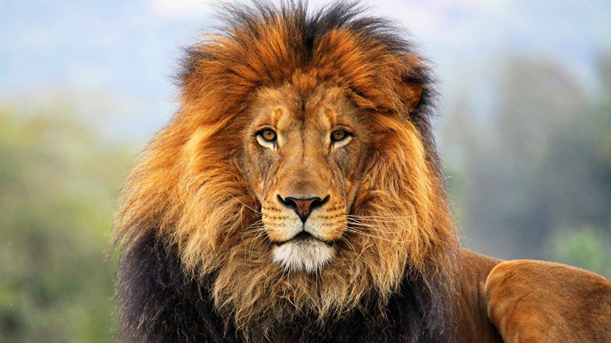

1. Um leão macho pode pesar entre 150 e 250 quilos e medir entre 2,60 e 3,30 metros de comprimento. Já o peso de uma fêmea varia de 120 a 190 quilos, e ela pode medir entre 2,40 e 2,70 metros.
2. São muito velozes em pequenas distâncias, chegando a atingir 50 quilômetros por hora.
3. Seus dentes caninos medem até 6 centímetros, e sua cauda pode ter 1 metro de comprimento.
4. A juba do leão tem até 24 centímetros de comprimento, e ela costuma escurecer com o passar dos anos.
5. O rugido de um leão pode ser ouvido a 9 quilômetros de distância. Por isso, ele é considerado o “Rei da Selva”.
6. A gestação de uma leoa leva de 100 a 119 dias. Normalmente, a ninhada é composta por dois ou três filhotes, podendo chegar a seis.
7. São os únicos felinos sociáveis, ou seja, que vivem em bandos.
8. Por causa de uma anomalia genética, podem existir leões brancos. Eles não são albinos e, por isso, não apresentam qualquer sensibilidade ao sol. Sua cor, no entanto, faz deles uma presa fácil nas savanas, já que não conseguem se camuflar. Seus olhos são azuis ou dourados. São encontrados livres na reserva de Timbavati, na África do Sul, onde são considerados sagrados por algumas tribos. Em alguns zoológicos, cruzam-se leões com a anomalia para nascerem mais filhotes brancos.
9. Um leão é capaz de comer até 30 quilos de carne de uma só vez. Por dia, um macho precisa de 7 quilos de carne, e uma fêmea, de 5 quilos.
10. Normalmente a missão da caça é da fêmea. Os machos também caçam, mas, por causa do calor proporcioando pela juba, ele logo se cansa. Além disso, por serem grandes, são pouco habilidosos.
{kind=link}